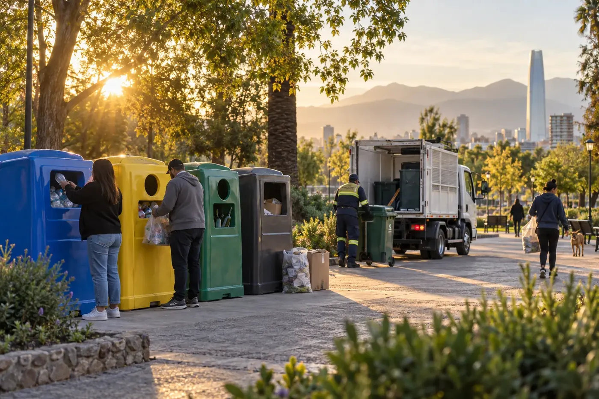
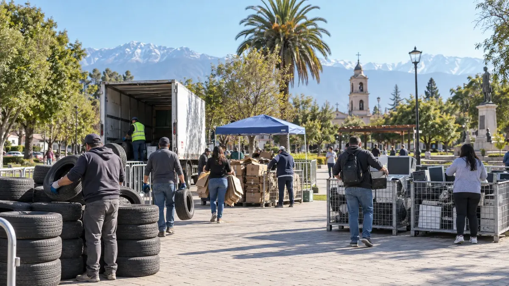
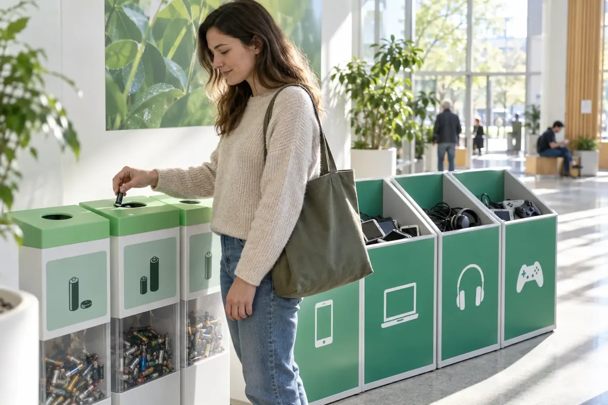
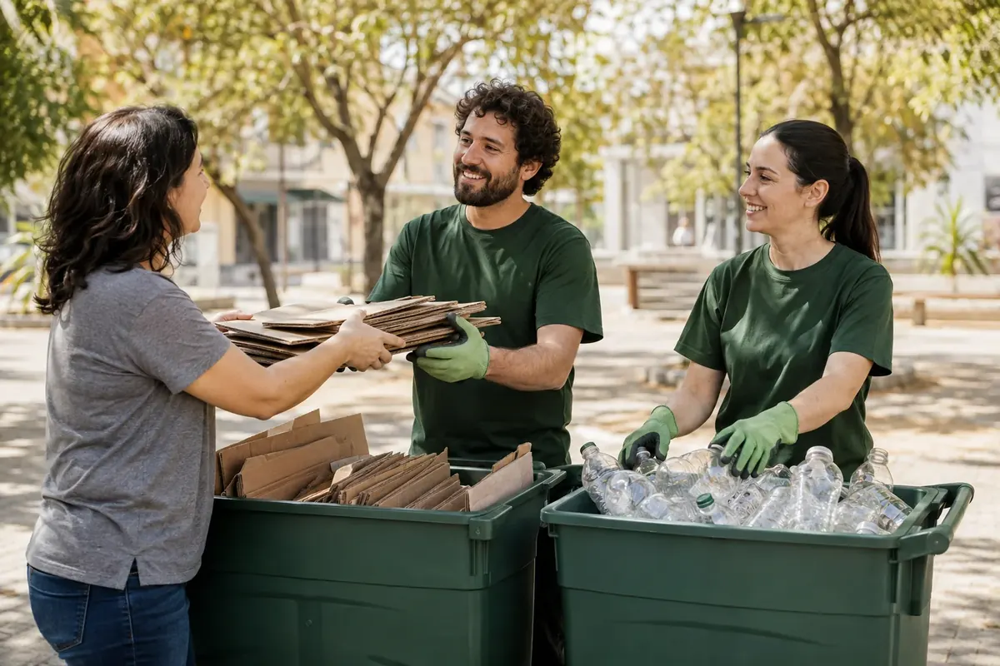

Diseño de campañas
Definimos el alcance, los materiales, el lugar y a quienes participan.
Define qué quieres recolectar y coordinamos puntos, operación y trazabilidad para tu municipio, empresa o comunidad.

Desde diseñar la campaña hasta coordinar el retiro y ordenar sus registros. Puedes solicitar el apoyo que necesitas.
Definimos el alcance, los materiales, el lugar y a quienes participan.

Indicaciones simples para entregar el material correcto de forma segura.

Coordinamos acceso, contenedores, carga y destino de los materiales.

Ordenamos los antecedentes para preparar una solicitud de campaña.
Ordenamos productos prioritarios, cantidades estimadas, puntos de recepción, fechas, horarios y responsables. El resultado es una base clara para organizar la campaña y sus antecedentes.
Traducimos los criterios de aceptación en instrucciones para participantes: qué recibir, qué excluir, cómo preparar cada material y cómo comunicar el destino de la recolección.
Antes de confirmar el retiro revisamos material, cantidad, embalaje y condiciones del punto de recepción. Cuando corresponde, el traslado se coordina con Transporte Autorizado y el destinatario acordado.
Reunimos responsable, residuos y cantidades, lugar, fechas, contenedores, comunicación, contingencias, destino y vehículos. Te ayudamos a preparar el expediente; la autorización la resuelve la Autoridad Sanitaria.
El lugar, las personas y los materiales definen cómo organizar la recolección.

Una campaña para tu comuna, barrio o espacio municipal. Definimos el alcance según los materiales, el lugar y la participación esperada.

Una campaña para reunir a tu equipo en torno a la recolección. Acordamos una jornada o una iniciativa periódica según las necesidades de tu organización.

Organiza una campaña en tu comunidad o espacio compartido. Partimos por conocer a los participantes y el lugar disponible para recibir materiales.
Elige un producto prioritario y precisa su categoría o tipo para planificar una campaña informada.
Indica la medida o el tipo. Las categorías A y B están sujetas a metas REP; bicicletas, sillas de ruedas, similares y neumáticos macizos tienen un tratamiento regulatorio diferente.
Se revisan material, origen, limpieza y presencia de contenido residual antes de definir cómo recibirlos en la campaña.
Necesitamos conocer el origen del aceite, su cantidad, el recipiente y si está mezclado con agua, combustibles u otras sustancias.
El tamaño, estado, baterías incorporadas y componentes sensibles determinan la forma de recepción y almacenamiento.
Se deben mantener separadas, secas y protegidas de cortocircuitos. Confirma el formato predominante y la cantidad estimada.
La tecnología, el estado y el riesgo de fuga o cortocircuito cambian las condiciones de acopio y retiro.
Se revisan limpieza, humedad, composición conocida y posibilidad de reutilización o valorización.
Indica si se trata de publicaciones separadas, material mezclado o papel con humedad, contaminación o elementos ajenos.
La selección es orientativa. La aceptación y las condiciones de campaña se confirman después de revisar el estado, contaminación, cantidad, lugar y destino del residuo.
El D.S. 29 regula las campañas temporales y esporádicas de recolección de residuos de productos prioritarios. La solicitud de autorización sanitaria se presenta ante la SEREMI de Salud correspondiente, al menos 40 días hábiles antes del inicio.
Definir responsable, materiales y cantidades estimadas, lugar, fechas, contenedores, comunicación, contingencias, destino y vehículos.
La Autoridad Sanitaria revisa los antecedentes. La campaña recibe únicamente lo autorizado y mantiene las condiciones definidas; con residuos peligrosos se requieren medidas operativas y personal capacitado.
Coordinar el destino autorizado, registrar lo recolectado y reportar la información que corresponda en RETC conforme al reglamento.
Una campaña temporal necesita una recepción clara para participantes y una operación definida para quien la organiza.
Indica organización, comuna, fecha estimada y productos prioritarios. Si aún no tienes cantidades, podemos partir con una estimación.
Revisamos qué se recibe, dónde, cuándo, en qué contenedor y bajo qué condiciones. También ordenamos responsables, contingencias, destino y vehículos cuando corresponda.
Para una campaña que requiere autorización sanitaria, reunimos los antecedentes con tiempo y preparamos instrucciones simples de entrega para el público.
Coordinamos la recepción, retiro y destino acordados. Al cierre, los registros permiten respaldar qué se recolectó y cómo se gestionó.
Sí. Comparte la municipalidad u organización responsable, la comuna, el lugar propuesto y los materiales que quieres incluir para evaluar el alcance.
Sí. El D.S. 29 exige autorización sanitaria para cada campaña de recolección de residuos de productos prioritarios. La solicitud debe presentarse ante la SEREMI de Salud correspondiente al menos 40 días hábiles antes del inicio.
Puedes solicitar una campaña para una empresa, una comunidad o un espacio compartido. La propuesta se prepara según el lugar, los participantes y los materiales.
Depende de las condiciones del material y de la operación disponible. Antes de anunciar la campaña se debe confirmar qué se acepta, cómo se entrega y qué queda fuera.
El alcance se define en la propuesta. Transporte Autorizado y HDS son servicios relacionados que se consultan cuando la campaña requiere apoyo de transporte o documentación.
La cotización depende del lugar, duración, materiales, cantidad estimada y servicios necesarios. Preparar estos antecedentes permite evaluar una propuesta para tu caso.
Prepara una primera ficha de alcance. Te ayudamos a ordenar la campaña y sus antecedentes sanitarios.
Envíala por WhatsApp y adjunta las fotografías. Este formulario no la envía por sí solo.
Coordinamos la campaña; Transporte Autorizado apoya el retiro y HDS revisa la documentación del residuo cuando corresponde. El alcance se acuerda en la propuesta.